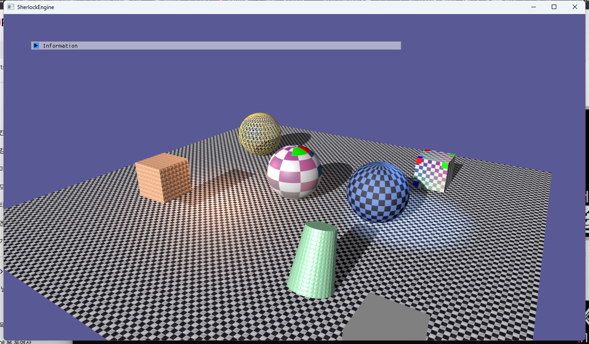

7단계 · RHI 인터페이스 추출
1·3·4·5·6단계에서 만든 조각(PipelineState, Buffer/Texture/Shader/Sampler, BindingLayout/ResourceSet, RenderPass/CommandList)은 이미 RHI의 모양을 하고 있었지만 D3D11 클래스였습니다. 이 단계는 API 중립 선언(RHI/: Desc, 핸들, 열거, 순수 가상 RHI::Device·RHI::CommandList)과 D3D11 구현(RHI/D3D11/)을 물리적으로 분리한 것입니다. 기능 추가는 없습니다. 분리 뒤 화면은 F10으로 애니메이션을 고정한 채 픽셀 단위로 비교했고, 씬 영역은 완전히 같습니다.
Renderer·Material·Mesh는 RHI::Device*와 핸들·Desc만 봅니다. 어느 백엔드인지는 RHI::CreateDevice(Backend::D3D11, desc) 한 줄이 정하고, 그 이름은 RHI/RHI.cpp와 RHI/D3D11/ 안에만 있습니다. rendering-analysis D21이 권한 "리소스는 핸들, Device와 CommandList만 가상"이 그대로 코드가 됐습니다. 3단계부터 이름과 시그니처를 RHI 최종형으로 잡아 둔 덕에 Renderer.cpp의 변경은 include 경로와 타입 이름(Device* → RHI::Device*)뿐입니다.
1.요약
| 항목 | 6단계까지 | 7단계 |
|---|---|---|
| 폴더 | Graphics/(Desc·핸들·Renderer 섞임), Graphics/D3D11/ | RHI/(선언만) · RHI/D3D11/(구현) · Graphics/(렌더러 층만) |
| Device | class Device — D3D11 구현이자 유일한 API | RHI::Device 순수 가상 + D3D11Device final |
| CommandList | class CommandList — D3D11 구현 | RHI::CommandList 순수 가상 + D3D11CommandList final |
| 생성 | Device graphicsDevice; 값 멤버, InitDevice(hwnd, w, h) | std::unique_ptr<RHI::Device> = RHI::CreateDevice(Backend, DeviceDesc) |
| ImGui 렌더러 | ImGuiBackend 네임스페이스(D3D11 폴더) | RHI::Device의 InitImGui / NewFrameImGui / RenderImGui / ShutdownImGui / GetImGuiTextureId |
| ShaderCompiler | 선언·구현 모두 D3D11 폴더 | 선언 RHI/ShaderCompiler.h, 구현 RHI/D3D11/ShaderCompiler.cpp(fxc/DXBC) |
| 격리 규칙 | Graphics/D3D11/ 밖 D3D 헤더 0건 | RHI/D3D11/ 밖 D3D 헤더 0건 (로드맵의 "RHI/ 밖"보다 엄격) |
| Renderer 변경 | — | include 경로, Device* → RHI::Device*, CommandList& → RHI::CommandList&. 로직 0줄 |
| 단축키 | F1–F9 | + F10 애니메이션 고정(픽셀 비교용) |
2.무엇이 RHI이고 무엇이 아닌가
RHI(Render Hardware Interface)는 API 차이만 감추는 층입니다. 리소스 생성, 파이프라인 상태, 바인딩, 렌더 패스, 드로우, 상태 전이 — 즉 D3D11과 D3D12가 서로 다르게 표현하는 것들입니다. 재질 시스템, 드로우 정렬, 텍스처 캐시, 그림자 패스의 순서는 RHI 위 Renderer의 일이고, 두 백엔드 어디서나 같은 코드로 돕니다. 이 경계를 폴더로 그었습니다.
SherlockEngine/
RHI/ 선언만. D3D 헤더 include 금지.
Handle.h {index, generation} 핸들 7종
PipelineTypes.h Format·CullMode·… 열거, PipelineStateDesc(+.cpp 해시)
ResourceDesc.h BufferDesc·TextureDesc·SamplerDesc·ShaderDesc
BindingTypes.h BindingLayoutDesc·ResourceSetDesc
RenderPassTypes.h RenderPassDesc·ResourceState
GraphicsConfig.h kFrameCount
Device.h RHI::Device (순수 가상)
CommandList.h RHI::CommandList (순수 가상)
ShaderCompiler.h 컴파일·리플렉션 함수 선언
RHI.h / RHI.cpp Backend, DeviceDesc, CreateDevice 팩토리 (.cpp 만 백엔드 헤더 include)
RHI/D3D11/ D3D11 구현. d3d11.h·dxgi.h·d3dcompiler.h·imgui_impl_dx11 은 여기만.
D3D11Device.h/.cpp, D3D11CommandList.h/.cpp, D3D11Common.h, D3D11Convert.h/.cpp,
D3D11Resources.h, ResourcePool.h, PipelineState.h/.cpp, PipelineStateCache.h/.cpp, ShaderCompiler.cpp
Graphics/ 렌더러 층. RHI 위에서 씬을 그린다.
Renderer.h/.cpp, Mesh.h/.cpp, VertexTypes.h, ShaderConstants.h, TextureLoader.h/.cpp
Scene/ App/ Core/ Shaders/ Assets/같은 모양의 라이브러리가 여럿 있습니다. NVRHI는 D3D11·D3D12·Vulkan 위에 가상 인터페이스와 리소스 핸들을 두고2, sokol_gfx는 Desc 구조체와 세대 카운터가 있는 풀·정수 id를 씁니다3. bgfx4와 Diligent Engine9도 같은 부류입니다. 우리 RHI는 그것들의 축소판이며, 인터페이스 표면은 이 프로젝트가 실제로 쓰는 것만 담습니다.
3.인터페이스
3.1 RHI::Device
6단계 Device의 공개 "핸들 API"를 그대로 순수 가상으로 옮겼습니다. 메서드 하나도 더하거나 빼지 않았고, D3D11에서만 편한 것(즉시 Map, 자동 밉 생성, 암묵적 동기화)은 원래부터 인터페이스에 없었습니다. UpdateBuffer는 "이 프레임 슬롯의 내용을 통째로 교체한다"만 약속하므로 D3D12의 링 버퍼로도 같은 의미를 지킬 수 있습니다.
// RHI/Device.h
namespace RHI
{
enum class Backend : uint8_t { D3D11 /*, D3D12 (8단계) */ };
struct DeviceDesc { void* windowHandle; int width, height; bool enableDebugLayer; }; // HWND 대신 void*
class Device
{
public:
virtual ~Device() = default;
virtual Backend GetBackend() const = 0;
virtual uint32_t BeginFrame() = 0; // 프레임 인덱스만
virtual void EndFrame() = 0; // Present
virtual CommandList& GetCommandList() = 0;
virtual void Resize(int, int) = 0;
virtual BufferHandle CreateBuffer(const BufferDesc&, const void* = nullptr) = 0;
virtual void UpdateBuffer(BufferHandle, const void*, uint32_t) = 0;
virtual TextureHandle CreateTexture(const TextureDesc&, const TextureSubresource* = nullptr, uint32_t = 0) = 0;
virtual SamplerHandle CreateSampler(const SamplerDesc&) = 0;
virtual ShaderHandle CreateShader(const ShaderDesc&) = 0;
virtual PipelineHandle CreatePipeline(const PipelineStateDesc&) = 0;
virtual BindingLayoutHandle CreateBindingLayout(const BindingLayoutDesc&) = 0;
virtual ResourceSetHandle CreateResourceSet(const ResourceSetDesc&) = 0;
// Destroy* 6종, GetBackBuffer/GetDepthBuffer, InvalidatePipelines, VSync/Tearing …
// ImGui 어댑터 5종 (7절)
};
}3.2 RHI::CommandList
6단계 메서드 집합 그대로입니다: BeginRenderPass / EndRenderPass / SetPipelineState / SetResourceSet / SetVertexBuffer / SetIndexBuffer / DrawIndexed / Barrier / CopyBuffer + Stats. D3D11 백엔드에서는 ImmediateContext 래퍼, D3D12에서는 ID3D12GraphicsCommandList 기록입니다. D3D12가 D3D11과 가장 크게 다른 세 가지 — 명시적 동기화, PSO, 커맨드 리스트와 디스크립터 테이블5 — 가 이미 인터페이스 어휘(Barrier, PipelineStateDesc, CommandList, ResourceSet)로 들어와 있습니다.
3.3 핸들은 값, Device만 가상
D21이 비교한 세 형태 — (a) 리소스마다 가상 인터페이스, (b) 핸들 + 백엔드 풀, (c) 컴파일 타임 선택 — 중 (b)를 리소스에, (a)를 Device/CommandList에 씁니다. 리소스가 {index, generation} 값이면 호출 코드에 포인터가 안 보이고, 세대 카운터가 해제 후 사용을 "항상 널"로 바꿉니다1. 드로우콜당 가상 호출 몇 개는 D3D API 호출 비용에 묻힙니다. 런타임 백엔드 전환(Backend 값 하나)이 되므로 8단계에서 두 백엔드를 같은 실행 파일에서 나란히 비교할 수 있습니다.
4.폴더 규칙과 백엔드 팩토리
규칙은 grep으로 강제합니다. RHI/D3D11/ 밖에서 ID3D11 | d3d11.h | dxgi.h | d3dcompiler.h | imgui_impl_dx11 | ComPtr가 주석에라도 나오면 위반입니다. 로드맵의 완료 기준은 "RHI/ 밖"이지만 한 단계 더 좁혀 RHI/의 선언 헤더도 D3D를 모르게 했습니다. 예외는 하나, 백엔드 팩토리입니다.
// RHI/RHI.cpp — RHI/ 안에서 백엔드 헤더를 include 하는 유일한 파일
std::unique_ptr<Device> CreateDevice(Backend backend, const DeviceDesc& desc)
{
switch (backend)
{
case Backend::D3D11:
{
auto device = std::make_unique<D3D11Device>();
if (!device->Init(desc)) return nullptr;
Log::Info("RHI : 백엔드 %s", ToString(backend));
return device;
}
default: return nullptr;
}
}새 백엔드는 case 하나와 RHI/<backend>/ 폴더 하나입니다. DeviceDesc::windowHandle이 void*인 것도 같은 이유로, RHI 헤더가 windows.h에 기대지 않게 하기 위해서입니다.
5.D3D11 백엔드
Device → D3D11Device final : public RHI::Device, CommandList → D3D11CommandList final : public RHI::CommandList. 메서드 본문은 6단계와 같고 override가 붙었을 뿐입니다. final은 가상 호출을 디바이러추얼라이즈할 여지를 컴파일러에 주고, 이 클래스를 더 상속할 이유가 없다는 선언이기도 합니다. 리소스 풀(ResourcePool<T, Handle>, free list + 세대)은 3단계 그대로이며, Desc::debugName은 SetPrivateData(WKPDID_D3DDebugObjectName)으로 D3D 객체에 붙어 Debug Layer 누수 보고와 RenderDoc에 이름으로 나옵니다7.
내부 접근자(GetDevice / GetContext / GetTexture / GetPipeline …)는 인터페이스에 없고 D3D11Device의 공개 메서드입니다. D3D11CommandList와 PipelineState만 부르며, 둘 다 같은 폴더에 있습니다. 폴더 밖 코드는 RHI::Device*만 갖고 있어 부를 수 없습니다.
6.셰이더 컴파일러의 자리
셰이더 바이트코드는 백엔드별입니다. fxc는 DXBC(SM 5.x), dxc는 DXIL(SM 6.x)을 냅니다8. 그래서 ShaderCompiler.h(컴파일·로드·리플렉션 함수 선언, BindingTypes만 의존)는 RHI/에, 구현(D3DCompile·D3DReflect)은 RHI/D3D11/ShaderCompiler.cpp에 있습니다. 8단계에서 D3D12 백엔드가 오면 같은 선언에 dxc 구현이 붙고, 캐시 키에 백엔드가 들어갑니다. 지금은 구현이 하나라 Backend 인자가 없습니다 — 필요해질 때 넣는 것이 "얇게" 유지하는 방법입니다.
7.ImGui 어댑터
로드맵은 두 길을 제시했습니다: RHI 위에 자체 ImGui 렌더러를 쓰거나(권장, 소형), 백엔드별로 imgui_impl_*을 갈아 끼우는 얇은 어댑터. 후자를 택했습니다. Dear ImGui 문서 자체가 "표준 백엔드는 검증되어 있고, 직접 만든 렌더러 백엔드가 프로젝트에 가치를 더할 가능성은 낮다"고 말합니다6. 자체 렌더러를 쓰려면 RHI에 시저 사각형과 동적 정점 버퍼 갱신 경로를 더해야 하는데, 지금 RHI에 그 이유가 그것뿐이라면 RHI를 두껍게 만드는 일입니다.
// RHI/Device.h — ImGui 렌더러는 Device 가 고른다
virtual bool InitImGui() = 0;
virtual void NewFrameImGui() = 0;
virtual void RenderImGui() = 0; // Renderer::BeginUIPass / EndUIPass 사이
virtual void ShutdownImGui() = 0;
virtual uint64_t GetImGuiTextureId(TextureHandle) = 0; // ImTextureID(ImU64) 로 캐스팅
// RHI/D3D11/D3D11Device.cpp
bool D3D11Device::InitImGui() { return ImGui_ImplDX11_Init(m_device.Get(), m_context.Get()); }
uint64_t D3D11Device::GetImGuiTextureId(TextureHandle h)
{
ID3D11ShaderResourceView* srv = …; // 그림자 맵 미리보기가 쓴다
return static_cast<uint64_t>(reinterpret_cast<uintptr_t>(srv));
}GetImGuiTextureId가 uint64_t를 돌려주는 것은 RHI 헤더에 imgui.h를 끌어오지 않기 위해서입니다. ImGui 1.92의 ImTextureID는 ImU64라 캐스팅 한 번으로 맞습니다. 6단계의 ImGuiBackend.h/.cpp는 삭제됐고, App은 ImGui 컨텍스트와 Win32 백엔드만 다룹니다. D3D12 백엔드는 imgui_impl_dx12를 같은 다섯 메서드 뒤에 둡니다.
8.호출 코드는 무엇이 바뀌었나
| 파일 | 변경 |
|---|---|
App/AppBase.h | Device graphicsDevice; → std::unique_ptr<RHI::Device> graphicsDevice; + RHI::Backend m_backend. Renderer가 그 뒤에 선언되어 먼저 파괴된다(핸들 반납 후 장치 해제). |
App/AppBase.cpp | InitDevice가 RHI::CreateDevice. ImGuiBackend::* → graphicsDevice->*ImGui(). . → ->. 프레임 루프의 순서는 6단계 그대로. |
App/TestApp.cpp, DebugUI | Device& → RHI::Device&, *graphicsDevice 전달, 그림자 맵 미리보기는 device.GetImGuiTextureId(). |
Graphics/Renderer.h/.cpp | include 경로(Graphics/D3D11/Device.h → RHI/Device.h 등), Device* → RHI::Device*, CommandList& → RHI::CommandList&. 로직 변경 0줄. |
Graphics/Mesh, VertexTypes, TextureLoader, Scene/* | include 경로만 (Graphics/Handle.h → RHI/Handle.h 등). Material·Scene은 그것조차 없음. |
로드맵의 "Renderer·Material·Mesh 코드가 변경 없이 컴파일" 기준에 대해 정직하게 적으면, Renderer는 이전에 구체 클래스 이름(Device)을 썼으므로 타입 이름 치환 없이는 불가능했습니다. 3~6단계에서 인터페이스가 될 이름과 시그니처를 미리 잡아 둔 결과, 그 치환이 전부였습니다.
9.함정과 해결
- 이름 충돌. 인터페이스를
RHI::Device로 두면 전역Device가 같은 이름이 됩니다. D3D11 클래스를D3D11Device·D3D11CommandList로 개명해 "이름에 백엔드가 있으면 구현, 없으면 인터페이스" 규칙을 세웠습니다. - 파괴 순서.
unique_ptr로 바뀐 장치는 AppBase 멤버 선언 순서상 Renderer보다 앞이라 뒤에 파괴됩니다(핸들 반납 → 장치 해제). ImGui 종료는 AppBase 소멸자에서 장치가 살아 있을 때 부르고,D3D11Device::ReleaseDevice도 아직 초기화되어 있으면 한 번 더 안전하게 닫습니다. - RHI 헤더에 imgui.h·windows.h 넣지 않기.
ImTextureID는uint64_t로,HWND는void*로. 헤더가 가벼워야 8단계 D3D12 폴더가 같은 헤더를 그대로 씁니다. - 팩토리의 예외.
RHI/RHI.cpp는 백엔드 헤더를 include 해야 합니다. 텍스트 grep 규칙(d3d11.h등)에는 걸리지 않지만, 문서에 예외로 적어 두었습니다. - ShaderCompiler.h 의 필터. 파일은
RHI/로 옮겼는데 vcxproj 필터가RHI\D3D11로 남아 있었습니다. 빌드에는 영향이 없지만 IDE 트리가 거짓말을 하므로 고쳤습니다. - CRLF 소스와 perl. 6단계와 같은 함정. 파일 이동은
mv, include 치환은sed(줄 단위라 CRLF 무관), 여러 줄 편집은 Edit 도구. - 결정적 비교. 애니메이션(공전·bob·자전·맥동)이 시간에 걸려 있어 두 실행의 화면이 같을 수 없었습니다. F10이
t = 0으로 고정하고 광원 공전을 끕니다. 비교 대상은 클라이언트 영역이며 ImGui 헤더 행도 포함해 0건이었습니다.
10.검증과 스크린샷
- 완료 기준 ① "
RHI/밖에서d3d11.h·dxgi.hinclude 0건" —RHI/D3D11/밖 기준으로ID3D11 | d3d11.h | dxgi.h | d3dcompiler.h | imgui_impl_dx11 | ComPtr0건(주석 포함).RHI/의 선언 헤더 10개는 D3D를 전혀 모른다. - 완료 기준 ② "Renderer·Material·Mesh 코드가 변경 없이 컴파일" — Material·Scene 무변경. Mesh·VertexTypes·TextureLoader는 include 경로만. Renderer는 include 경로 + 타입 이름(8절). Debug·Release x64 빌드 통과.
- 완료 기준 ③ "이전 단계와 같은 화면" — F10 고정 상태에서 리팩터 전(6단계 코드 + F10)과 후를 같은 스크립트로 캡처. 비교 영역 794,880 픽셀 중 12픽셀 차이, 전부 창 오른쪽 아래 모서리(x 1281–1287, y 746–750; Windows 11 둥근 창 모서리가 바탕화면과 섞이는 곳), 채널 합 최대 차이 4/765. 씬과 ImGui 헤더 영역은 0픽셀. 그림 1.
- 로그:
RHI : 백엔드 D3D11. 리플렉션·바인딩 대조·PSO 생성 로그는 6단계와 동일. - 리사이즈 1500×900 ↔ 900×500 6회 + 최소화/복원: Debug Layer 메시지 0. 셰이더 핫리로드: 편집 → 세대 2, 에러 → 유지, 복구 → 세대 3(스크립트 재실행).
- 종료 시 자식 Live Object 0건(
D3D11Device::ReleaseDevice순서 유지).

11.참고 문헌
- Andre Weissflog, Handles are the better pointers, 2018 — 인덱스 핸들 + 세대 카운터로 use-after-free 를 잡는 설계. floooh.github.io/2018/06/17/handles-vs-pointers.html
- NVIDIA, NVRHI — D3D11·D3D12·Vulkan 위의 공통 추상화, 가상 인터페이스 + 리소스 핸들. github.com/NVIDIA-RTX/NVRHI
- Andre Weissflog, sokol_gfx.h — Desc 구조체 → 정수 id, 세대 풀, 다중 백엔드의 단일 헤더 구현. github.com/floooh/sokol/blob/master/sokol_gfx.h
- Branimir Karadžić, bgfx Overview — 다중 백엔드 핸들 기반 렌더링 라이브러리. bkaradzic.github.io/bgfx/overview.html
- Microsoft Learn, Important Changes from Direct3D 11 to Direct3D 12 — 명시적 동기화, PSO, 커맨드 리스트, 디스크립터 힙. learn.microsoft.com/…/important-changes-from-directx-11-to-directx-12
- Dear ImGui, docs/BACKENDS.md — 표준 백엔드 사용 권고, 자체 렌더러 백엔드의 가치. github.com/ocornut/imgui/blob/master/docs/BACKENDS.md
- Microsoft Learn, ID3D11DeviceChild::SetPrivateData — WKPDID_D3DDebugObjectName 으로 디버그 이름. learn.microsoft.com/…/nf-d3d11-id3d11devicechild-setprivatedata
- Microsoft, DirectX Shader Compiler — HLSL → DXIL(dxc). fxc 의 DXBC 와 대비. github.com/microsoft/DirectXShaderCompiler
- Diligent Graphics, Diligent Engine — D3D11/12·Vulkan·Metal·OpenGL·WebGPU 추상화 층. github.com/DiligentGraphics/DiligentEngine
- SherlockEngine, rendering-analysis.html D21 — RHI 추상화의 형태와 도입 시점. rendering-analysis.html#d21